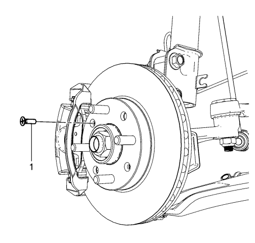
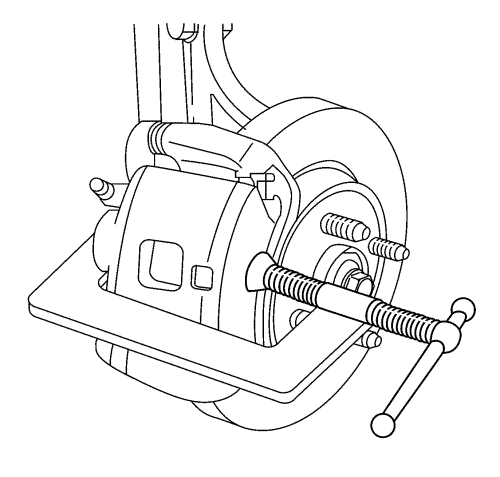
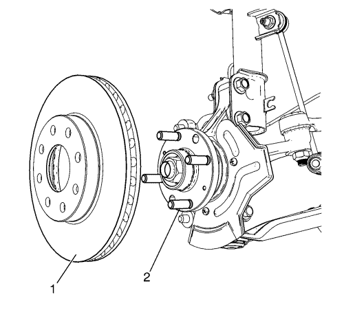
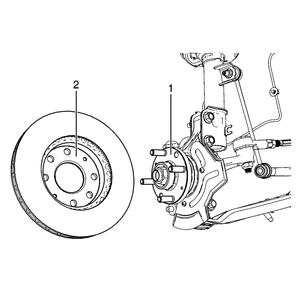
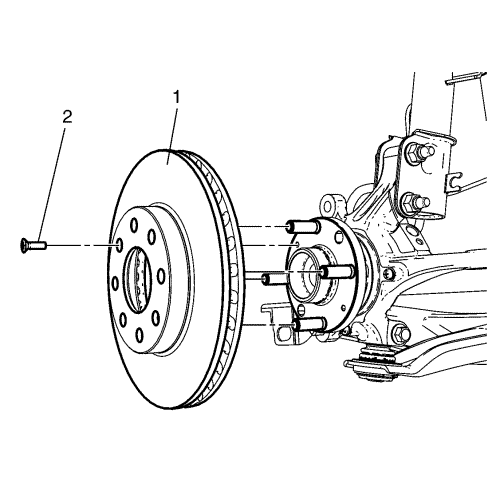
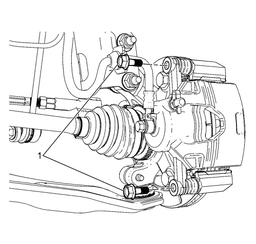

Sustitución del rotor de freno delantero
Herramientas especiales
| • | CH-41013 Kit para repasado del rotor |
| • | CH-42450-A Juego de repaso del cubo de rueda |
Si desea informarse sobre herramientas regionales equivalentes, consultar Herramientas especiales .
Advertencia: Consulte Advertencia relacionada con el polvo procedente de los frenos en la sección Prólogo
Procedimiento de desmontaje
Precaución: Consulte Precauciones a tomar para levantar el vehículo con una grúa o un gato en la sección Prólogo
- Elevar el vehículo y soportarlo de manera segura.
- Desmonte la rueda del vehículo. Consultar Desmontaje y montaje de la rueda y el neumático .

- Desmonte el tornillo del rotor de freno (1).

- Monte un sargento sobre el cuerpo de la pinza de freno, apoyando los extremos del sargento contra la parte trasera del cuerpo de la pinza y la pastilla de freno de disco exterior.
- Apriete el sargento, de manera uniforme, hasta que el pistón de la pinza de freno esté lo suficientemente comprimido, en el interior de la pinza de freno, para permitir que la pinza de freno se deslice más allá del rotor de freno.
- Desmonte la abrazadera C.

- Desmonte la pinza de freno y el soporte de fijación de la pinza como un conjunto, de la mangueta, y sujete el conjunto con un gancho resistente, o similar. Asegúrese de que no hay tensión en el tubo flexible del freno hidráulico. Consultar Sustitución del soporte de la pinza del freno delantero .
- Desmonte el rotor de freno (1), de la brida del cubo de rueda (2).
Procedimiento de montaje

Nota: Siempre que el rotor de freno se haya separado de la brida de cubo/eje, se deberá limpiar cualquier óxido o contaminantes de la brida de cubo/eje y las superficies de conexión del rotor de freno. Si no se hace, se podrá producir un alabeo montado (LRO) excesivo del rotor de freno que podría provocar pulsaciones en el freno.
- Utilizando el kit para el repasado del cubo de rueda, CH-42450-A, limpie a fondo la superficie de contacto de la brida del cubo de rueda (1), para eliminar todo el óxido o corrosión que haya en la misma.
- Utilizando el kit para el repasado del rotor, CH-41013-A, limpie a fondo la superficie de contacto y la superficie de sujeción del rotor de freno (2), para eliminar todo el óxido o corrosión que haya en las mismas.
- Revise las superficies de conexión de la brida de cubo/eje y el rotor para garantizar que no queden partículas o restos extraños.

- Monte el rotor de freno (1) en la brida de cubo/eje.
Precaución: Consulte Precaución con las fijaciones en la sección Prólogo
- Monte el tornillo del rotor de freno (2), y apriételo a 4 N·m (35 lb pulg.).

- Desmonte el soporte, y monte la pinza de freno y el soporte de la pinza de freno como un conjunto en la mangueta y monte los pernos del soporte de la pinza de freno (1). Consultar Sustitución del soporte de la pinza del freno delantero .
- Monte el conjunto de neumático y llanta. Consultar Desmontaje y montaje de la rueda y el neumático .
- Bajar el vehículo.
- Si el rotor de freno se repasó o se sustituyó, o si se instalaron nuevas pastillas de freno, lime las pastillas y los rotores. Consultar Pulido del rotor y las pastillas de freno .
| © Copyright Chevrolet Europe. Reservados todos los derechos |